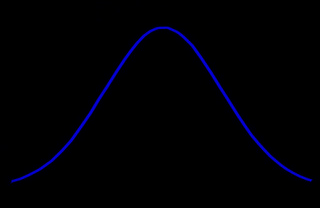

Chapter 12: Discussion and Conclusion
Source: Pages 255–308 of MintonThesis.pdf (September 2009). Text extracted from PDF; figures extracted directly as images.
12.1 Introduction
In the introduction to this thesis, I described the five ‘empirical’ chapters (chapters 7–11) as addressing either a five-year, thirty-year, or hundred-year version of the same overall topic (covered in chapters 9–11, 8, and 7 respectively). Following from this division, this last chapter will offer three different discussions, one for each scale of observation.
Within the five-year discussion, I will indicate how my analysis of the Pathways to Work pilot project research and related policy documents (chapters 9–11) can contribute to more general (but currently contemporary) debates about evidence-based policy and political decision-making.
Within the thirty-year discussion, I will offer a theory – closely following the evidence presented in chapter 8, and based to a large extent on research published by Christina Beatty and Stephen Fothergill1 – suggesting why, following ‘structural adjustments’ in the UK labour market in the 1980s and early 1990s, rates of working-age sickness benefit receipt increased so substantially and persistently.
Within the hundred-year discussion, I will address the concept and category of ‘working age’ more generally, as it has developed both within political bureaucracies and the public imagination over the last century, and as it relates the complementary concept and category of ‘retirement’.
These three discussions will not attempt to offer full and systematic accounts of the material covered within the chapters to which they relate, and do not attempt to formally ‘prove’ or articulate the arguments being suggested. Instead, they simply attempt to present and describe a number of ‘middle range theories’2 that appear consonant both with the evidence discussed in the last half of the thesis, and many interconnected theories that preface them in the first half of the thesis. In short: these summaries are attempts to distil ‘knowledge’ into ‘insight’.
12.2 The Five-year Discussion: Evidence-based politics and the rhetorical use of statistics
12.2.1 Introduction
Within chapters 9–11, I showed how, as Pathways to Work developed from a policy document written in 2002, to a nationally rolled-out new standard in social security provision by 2008, the quantitative evidence in support of the programme, based on longer-term evaluation of the pilot programme, became harder to interpret in a positive light. The initial effects in off-flow rates, which appeared to suggest the programme’s unambiguous effectiveness when presented in The Graph (Chapter Ten), were shown only to be effective in the shorter-term (0–6 months), and faded into statistical and substantive insignificance over the next twelve months (Chapter Eleven). By the time evidence of the longer-term ineffectiveness of Pathways became available, however, the government appears to have already become ideologically and politically committed to the programme, to believe in its efficacy, and to its national roll-out.
This five-year discussion will attempt to suggest how later evidence, not consonant with the government’s hopes for Pathways, has been presented and interpreted so as to appear more positive than it actually is. In other words: this discussion will look at how statistics have, in this case, been used rhetorically, to justify political decisions, rather than evidentially, to make political decisions.
12.2.2 Redefining Purpose and Success
The findings of the ‘Impact of Pathways to Work’ (analysed in chapter 11) do not appear, publically at least, to have reduced the DWP’s commitment to Pathways and to roll it out nationally. They do, however, seem to have led to a change in the official stated purpose of the programme. From the ‘Impact of Pathways to Work’ report onwards, PSI research reports on Pathways have stated that the programme “is intended to encourage employment among people claiming incapacity benefits”;3 in doing so, the only intended outcome of Pathways to have been evaluated as statistically significant, an increase in employment rates, has been declared the primary purpose of the programme.
Although one early report stated that “The new Pathways to Work pilots are central to the Government’s aim of reducing the rates of customers moving onto, and remaining on IB”, in general two types of approach appear to have been adopted when stating the aim of Pathways:
The Aspirational Approach: To state the aims of the programme in such general terms that they are incapable of empirical falsification (such as ‘to move forward’ or ‘to facilitate change’); or
The Technical Approach: To subtly rephrase the stated aims of the programme so as to focus upon those intended outputs which have been empirically ‘verified.’ (‘According to this survey’, ‘for this sub-group’, ‘as measured using this indicator’, and so on)
Both approaches, using antithetical means, allow the DWP to avoid having to declare Pathways as ‘unsuccessful’: the Aspirational Approach by making claims that are neither provable nor disprovable; and the Technical Approach by making claims that have already been proven.
To defend and clarify this assertion, I will introduce some of the concepts and terminology used in the statistical family of techniques known as ‘latent variable modelling’.4 Within this approach, an ontological distinction is drawn between two types of object: ‘observed variables’, and ‘latent variables’. By convention, these objects tend to be represented graphically as rectangular and elliptical shapes respectively, as indicated in Figure 1.

Given the concept of the observed/latent variable distinction, I propose using a slightly different terminology: instead of ‘observed variable’, I will use the term ‘empirical object’; and instead of ‘latent variable’, I will use the term ‘imagined object’. Following from this, I suggest a new distinction be made: between objects that are ‘observed’, and objects that are ‘not observed’. Graphically, I will represent this distinction by adopting solid lines for ‘observed’ objects, and dashed lines for ‘non-observed’ objects, as shown in Figure 2.

As a way of illustrating the idea that imagined objects are inferred relationships between empirical objects, consider a simple mathematical example where one observes three empirical objects: [x=1; y=1], [x=2; y=4], and [x=4; y=16]. From these three empirical objects, the observer assumes the existence of a Generative Rule stating that y = x2; the assumed existence of the Generative Rule then allows the observer to infer the existence of other, non-observed, empirical objects (such as [x=3; y=9]). This process is represented graphically in Figure 3.

With respect to political claim-making, an example of this type of empirical object/imagined object relationship is represented graphically in Figure 4.

During the period over which the original Pathways pilots were being implemented and evaluated, described in chapter 10, DWP accounts and descriptions of Pathways involved repeatedly promoting two objects: the imagined object, ‘Pathways to Work is effective’, and the empirical object (or more accurately family of empirical objects), ‘six month off-flow rate’, that I have referred to as The Graph. The rhetorical function of this type of pairing is represented graphically in Figure 5.

Figure 6 presents a graphical illustration of this type of recursive process. Here a strong claim is made to the reader that two objects should be accepted: an imagined object, and an empirical object in support. The empirical object is used to overcome the reader’s reticence to accept the imagined object; once the imagined object has been accepted, however, the reader is readier to infer the existence of further empirical objects in support (Stage 1). Having now accepted the existence of an empirical object that has not been stated or observed, the reader may come to believe that the empirical basis for belief in the imagined object is stronger than has ever been explicitly claimed (Stage 2). More generally: the causal influence between evidence and belief can, and often does, run in both directions.

I suggest that the empirical object ‘The Graph’ was used as an instrument with which to ‘implant’ the imagined object, ‘Pathways to Work works’, in the mind of the reader. Once successfully implanted, and due to the recursive paths of causal influence described above, the imagined object can effectively generate assumptions that other belief-supportive empirical objects exist.
Crucially, the belief may persist even if the evidence that originally caused the reader to accept the belief does not. Figure 7 graphically indicates how this aspect of beliefs appears to have been utilised in continuing to promote Pathways to Work following from the PSI report.

A different empirical object is being used to continue to support the same imaginary object. By not strongly disasserting the original empirical object (off-flow rates), the reader can be led to believe that the new evidence is in addition to, rather than instead of, the old evidence.
What appears to have happened is that an initially and apparently strong piece of evidence was used to promote the belief in Pathways. Later, and surreptitiously, this strong piece of evidence was removed and replaced with a much weaker piece of evidence. Having already accepted the belief that ‘Pathways is effective’, however, this weaker evidence will generally be sufficient to maintain the belief. This follows from a more general observation about evidence and beliefs: the strength of the evidence required to maintain a belief is lower than that required to accept the belief in the first place.
12.2.3 Bait and Switch
In the above discussion, I have attempted to suggest why and how evidence has been used rhetorically, to indicate that a particular set of alterations to the way in which new Incapacity Benefits are administered, collectively known as Pathways to Work, has led to a constellation of empirically observable changes to the labour markets, to individual attitudes, to health outcomes, to social security expenditure, and to other ‘improvements’ in the welfare state from the perspective of ‘the general public’ (as politicians imagine them to be).
The problem from the DWP’s perspective, however, is that much of the empirical evidence produced by and for the DWP in evaluating Pathways has indicated that these empirically observable changes have not been observed, and cannot be demonstrated statistically. The above discussion suggests a reason why the declared purpose of Pathways tends to vacillate between the very technical and specific, and the very aspirational and general: by vacillating between Technical and Aspirational statements, the DWP may be attempting to direct the reader towards the DWP’s preferred empirical proxy.
In making rhetorical use of statistics and quantitative evidence in this way, the government can avoid either admitting or suggesting that one of its flagship welfare reform policies has failed.
12.2.4 Discussion
The story of the previous three chapters seems, at its simplest, to be as follows:
Central government identified a strong public demand to intervene to reduce IVB/IB claimant rates, which the public believed constituted a violation of an implicit work-based ‘promise’ that one should work during working age and only stop working after retirement age.
Central government broadly accepted the public’s interpretation of the issue, and set about intervening through a ‘New Deal’ style programme which aimed to increase the size of the reward if the individual chooses to ‘cooperate’ (through ‘Return to Work Credits’), and increase the size of the punishment if the individual chooses to ‘defect’ (up to and including financial sanctions for the chronically non-compliant).
Early evidence, produced at the earlier stages of the initial pilot schemes, appeared to suggest that Pathways was effective. This early evidence was sufficient to convince central government to proceed with a national roll-out.
Later evidence, which came to light only some time after central government had come to believe that Pathways was an effective intervention, indicated that it was not. However, by the time this evidence had become available, central government was already inexorably committed to its wholesale implementation.
Thus began a small but significant campaign of ‘evidence-based rhetoric’: using quantitative data and statistical inference not to help make political decisions, but to justify political decisions that had already been made.
Though such evidence was being ‘spun’ as best as it could, it was not being promoted as strongly as earlier evidence. Central government seemed content to let Pathways fall out of mainstream political and public consciousness.
In around five years, Pathways to Work made the full transition from a set of broad proposals outlined in a short green paper5 to a new national standard. Thousands of people are now simultaneously treating millions of other people ‘this way’ rather than ‘that way’, quite possibly because a few dozen people either did not notice that long-term evidence suggested doing things ‘this way’ was not really an improvement over doing things ‘that way’; or thought that if they pretended the long-term evidence did not suggest ‘this way’ was no better than ‘that way’, then hopefully a few hundred people would not notice this either.
In the Radio 4 programme ‘Analysis: Dead Cert’, broadcast on 6 November 2008, journalist Michael Blastland considers reasons why politicians often attempt to project a greater sense of certainty about the effectiveness of policies than can be empirically justified. Within the programme, Gloria Laycock, an academic who has worked on policy evaluation for the Home Office, describes how programme evaluations can become overrun by broader political considerations:
[In theory, neutral, experimental evaluation of policies are] something we’ve always been very keen on. Unfortunately, that process has been called a pilot study. The Home Office ministers who will launch something called a pilot study on, let’s say, the first of January, by the first of February they’re screaming to know whether it worked or not, and by the first of March they’ve launched the roll-out programme and we still don’t know whether it worked or not, and then by, I don’t know, September, somebody said it was a complete disaster, but “oh well, that’s a shame, because we’ve now rolled it out across half the country!” Hey: you might have to wait a year to find out what the answer is. But impatience is just the … a massive driver in public policy, they are just impossibly impatient. And, anything that smacks of a complicated answer: forget it! They behave as though the public couldn’t cope with [anything] complicated.6
Given the pressures driving cabinet ministers towards this kind of conceptual myopia and confirmation bias, one can see why decisions about the testing, evaluation, and implementation of complex social interventions might not be most effectively handled by central government. Actual programme efficacy often only plays a very secondary role in the implementation of programmes to apparent programme efficacy, and the apparent personal efficacy of the individuals making political decisions.
12.3 The Thirty-year Discussion: On the nonlinear relationship between ‘job fitness’ (including physical fitness) and employability
12.3.1 Introduction
The previous section has suggested that politicians were perhaps too ready to accept and promote evidence appearing to support Pathways’s claims to efficacy, and conversely too willing to overlook or bury evidence challenging these claims. In the case of incapacity benefits, broader structural and historical factors also matter. As I showed in chapter 8, over the past three decades there has been a very substantial increase in the numbers of people claiming IVB/IB, with rates roughly doubling from about 30 to 60 per thousand persons of working age from the mid-1980s to mid-1990s.
I think these findings all point in the same direction, and can be largely explained by assuming that there is a nonlinear relationship between employment ‘fitness’ (how well or poorly a candidate compares to others when being assessed for a particular job) and employability (the ease or difficulty a candidate faces in getting a job).
12.3.2 The Model
The assumptions I make in constructing the model are as follows:
Jobs are allocated through a first-past-the-post selection process. This means employers, when selecting a candidate for a job, choose who they believe to be the ‘best’ candidate, rather than allocating fractions of a job in proportion to the relative perceived fitness of the candidates.
There is a level of variability and inconsistency in the level of apparent job fitness an applicant has for a job. In the model this is represented by imagining that an applicant’s apparent job fitness follows a Normal distribution curve.
Each job applicant also has an average level of apparent job fitness, a central level of apparent fitness around which displays of fitness tend to converge.
Visually, this is shown in Figure 8, in which the fitness distribution of two applicants, A and B, are shown. For simplicity, the variance of both applicants’ distributions are assumed to be identical, but the theoretical mean of B’s performance is lower than A’s. This difference in means is B’s fitness disadvantage relative to A, represented by the letter d.


As a simple illustration of the process, candidate A, the non-disadvantaged candidate, gets the job on three occasions, and B, the disadvantaged candidate, gets the job on one occasion (in which B performed significantly above expectation, and A performed significantly below expectation).
Note that the likelihood of a candidate getting a job does not depend upon the absolute position of the candidate’s draw on the job fitness axis, but instead entirely on the candidate’s position relative to other candidates.
Repeating this process many times,7 for varying numbers of rivals (k = 1 to 15) and varying levels of fitness disadvantage (d), produces the estimated probabilities shown in Figure 9.

Note the log-scale on the horizontal axis, but a linear scale on the vertical axis. The relationship between employability and job fitness is approximately log-linear. The effect of increased competition, however, is to shift this log-linear relationship so that the same level of job fitness disadvantage results in exponentially increasing levels of employability disadvantage. In times of greater job scarcity, slight disadvantages in job fitness result in extremely severe disadvantages in labour market employability. Even if a disadvantaged candidate could do a job, he or she has a vanishingly small chance of being allowed to do so.
12.3.3 Objections and Provisos
The model described above is highly simplistic. I want to briefly discuss verbally a number of issues that are important in job-selection processes but not represented in the model:
Conventions and Codes filter candidates prior to fitness assessment: For example, heuristics such as “Don’t interview anyone over 50”, “Don’t interview anyone with a gap in their employment record of more than six months”. I believe including this process would further increase the employability disadvantage faced by disadvantaged applicants.
Temp Agencies: For many low-paid jobs, employment is secured through temp agencies and similar brokerage services. The temp agency employee acts as a surrogate interviewer, and so exactly the same argument applies.
Local Fitness Disadvantage: Where labour market mobility increases, regional fitness disadvantage quickly becomes a very severe employability disadvantage, as the pool of rivals expands to include people from other parts of the country, and from other countries. Immigrant labour will tend to be ‘fitter’ (younger, stronger, healthier, better motivated) from the employers’ perspective than local labour.
Homophily: Perhaps employers tend to want to pick employees who are like themselves. This issue is very important, but I expect not so fundamental that the argument developed in the fitness model is not credible.
12.3.4 Concluding Remarks
My main aim in creating and describing the model was to explore intuitions about why having a slight but noticeable impairment relative to others in the labour market might lead to people becoming, effectively, ‘unemployable’. In doing so, I have indicated why demand-side explanations for the rapid rise in incapacity benefit claimant rates since the late 1980s may be much more important than many politicians appear to assume.
As David Webster, an economic geographer, suggests, the government “is very confident that the problem lies entirely on the supply side of the labour market. In other words it is caused by the characteristics or motivation of workless people and not by any shortage of demand for labour”.8 Conversely, demand-side policies – such as providing sheltered employment opportunities – have been persistently avoided, and demand-side ‘legacy’ organisations, such as Remploy, have been forced to shed thousands of jobs.9
The broader reasons for avoiding demand-side interventions seem to be ideological. In the case of Pathways to Work, this zeal has led to the use of private- and third-sector organisations to deliver Pathways in the majority of the country, even though all of the pilot studies were conducted using public sector Jobcentre Plus, and so the effectiveness of private- and third-sector organisations’ provision is unknown.
12.4 The Hundred-year Discussion
12.4.1 Introduction
In this section of the conclusion, I will look at these issues from a century-long perspective, and indicate how the issues discussed in the previous two sections form part of a much broader and more significant change that has occurred over the course of the Twentieth century. This change is not just to do with labour economics or social policy evaluation, but the nature of life itself.
12.4.2 The Second Epidemiological Transition, Ageing, and Retirement
The crux of my argument is presented in Figure 10 and Figure 11 below. These two graphs show, for males and females respectively, both the mean age of death, and also the variance around this mean age, for people in England and Wales, from 1841 to 2005.

Estimated used weighted average of median ages within five-year age-bands. Source: ‘England & Wales, Total Population: Deaths 1841–2005’, from http://www.mortality.org

Estimated used weighted average of median ages within five-year age-bands. Source: ‘England & Wales, Total Population: Deaths 1841–2005’, from http://www.mortality.org
The graphs indicate that something incredible took place during the first half of the Twentieth Century: average life expectancy more than doubled, from around 30 years to over 60 years of age. At the same time, the variance of life expectancy reduced by an even greater factor, to around a fifth of its previous level. Life became less risky, in the sense that ever larger proportions of the population could realistically expect to reach old age.
This shift has been termed ‘the epidemiological transition’,10 which Richard Wilkinson defines as “the well-known process by which the old infectious causes of death, which killed people at all ages but particularly in childhood, gave way to degenerative diseases such as cardiovascular diseases and cancers, which appear mainly in later life.”
Figure 12 indicates one way in which this transition starts to become directly relevant to the issues discussed in this thesis. It plots male life expectancy, together with male state retirement age, from 1841 to 2005.

Source: ‘England & Wales, Life expectancy by year of death’, from http://www.mortality.org
In 1928, when the male state pension age was first set at 65, average male age of death was 58.3; by 2005, it was 77.3. In other words, whereas in 1928 a state guarantee to provide financial assistance to men aged over 65 could be interpreted as a promise to allow men to live without working if they happen to live around 16% longer than they are expected to live, by 2005 state pensions had become a promise to allow people to live without working for almost the last fifth of their life. Due to increases in life expectancy, and massive decreases in the risk of early death, the same state-legislated promise in chronological terms came to mean something very different in experiential terms.
Over the course of the Twentieth century, a meagre contingency plan for a few individuals turned into a generous promise for everyone. Perhaps as a result of this, ‘the third age’ took the place of ‘the afterlife’ as a secular means of justifying and maintaining belief in a Work Ethic that originally had its roots in religious fundamentalism.
Figure 13, based on the 1928–2005 portion of the data, illustrates how the promise of retirement at 65 has changed in experiential terms.

Average age of death for males, England & Wales, 1928–2005, as a percentage of male state retirement age. Source: ‘England & Wales, Life expectancy by year of death’, from http://www.mortality.org
Based on these numbers, retirement at 65 meant a promise of not having to work for the last forty-third of one’s life in 1950, for the last twentieth of one’s life in 1960, for the last seventeenth of one’s life in 1970, for the last eleventh of one’s life in 1980, for the last eighth of one’s life in 1990, and for the last sixth of one’s life in 2000.
However, though life expectancies have risen on average, they have neither risen at the same rate, nor equalised between different social groups, between regions, and between social classes. This disparity between a national standard age of retirement, and systematically differing life circumstances and life expectancies, means that the implicit promise of retirement is ‘over-fulfilled’ for some people, and severely ‘under-fulfilled’ for others.
If the experiential promise of retirement were to be kept, ‘on average’, for more of the nation’s citizens, then the duration of working age expected of different people would be a function of life expectancy rather than an arbitrary value chosen more than three generations ago. Based on this premise, Figure 14 indicates, for selected years between 1974 and 1994, the age at which men of different social classes ‘ought’ to retire if they are to be retired for a national ‘average’ proportion of their lives.

Age at which men of different social classes ‘should’ retire if they were, on the average, to spend the same proportion of their life retired. Sources: http://www.mortality.org; Hattersley, L. (Summer 1999) ‘Trends in Life Expectancy by Social Class – an update’, Health Statistics Quarterly
Using National Statistics data on male life expectancy at local authority level, the five areas with the lowest fair-retirement ages are:
- Blackpool (North West): 61.56 years
- Manchester (North West): 61.78 years
- Liverpool (North West): 62.18 years
- Blackburn with Darwen (North West): 62.39 years
- Sandwell (West Midlands): 62.44 years
Conversely, the five areas with the highest fair-retirement ages are:
- Kensington & Chelsea (London): 70.43 years
- Westminster (London): 68.56 years
- East Dorset (South West): 68.41 years
- Elmbridge (South East): 68.20 years
- Hart (South East): 68.10 years
Note that the disparity between highest and lowest fair retirement ages using this measure is of a similar magnitude to that based on social class.
12.4.3 Concluding Remarks: Fair Retirement Ages and Incapacity Benefits
I believe the concept of the ‘fair retirement age’ can do much to explain the geographical concentrations and occupational social gradients of IB claimant rate trends. Stark mortality gradients exist between places, and between occupationally-defined social classes. These mortality gradients do not result, to any substantial extent, from differential exposure to infectious diseases, but instead due to differential rates of degenerative illness; in short, to people from different geographical and occupational backgrounds ageing at different speeds.
More specifically, it seems reasonable to assume that, on average, the level of health of a seventy-year-old man from Kensington & Chelsea is similar to that of a sixty-two-year-old man from Blackpool, and in both cases be like that of a (nationally average) sixty-five-year-old male retiree. However, whereas the seventy-year-old Kensingtonian is not expected either by the State, or the general public, to be in employment, the sixty-two-year-old from Blackpool is, and would be financially penalised by the State (through conditionality within social security payments), and morally chastised by the public (through newspaper stories and diatribes), for not achieving or seeking employment.
I suggest that part of the reason for the patterning of IB claimant rates may be to do with the effect that lower paid, lower status work has on the ageing process, accelerating the rate at which degenerative illnesses develop and accumulate. In many cases, people move onto incapacity benefits only when they have reached a level of physical and mental decline equivalent to that of a retiree.
12.5 Policy Recommendations
12.5.1 Hundred Year Recommendation: Flexible Entry to the Third Age
If, as I have suggested, people in the UK have come to believe that they have been ‘promised’ a generous ‘third age’ of relative leisure after a long period of continual employment, and that this third age should begin as and when individuals have become ‘old’, then perhaps this concept of ‘oldness’ could be operationalised using something other than just chronology.
I recommend that people be allowed to apply to claim a state pension before statutory retirement age, on medical grounds. All those aged over fifty (for example) would be allowed to apply to claim. Applications could be assessed through medical and cognitive examination, with those performing below a threshold level normally associated with people who are retired being allowed to claim such benefits early.
In practice, I think IB is, already, being widely used as de facto early retirement benefit, and that this recommendation has already been adopted ‘in practice’, if not ‘in theory’.
If people were allowed more choice as to when they leave ‘working age’ and enter the ‘third age’, then I believe the official rates of working-age ‘economic inactivity’ due to illness would decrease dramatically. Furthermore, these new statistics would better represent lived realities.
12.5.2 Thirty Year Recommendation: Sheltered Employment
My ‘thirty year’ policy recommendation follows intuitively from the ‘thirty year’ discussion: The State should become much more actively and comprehensively involved in the ‘demand side’ of the labour market, in order to provide viable and realistic employment opportunities for people who want to work but are vanishingly unlikely to find employment by other means.
Such demand-side interventions could include:
- Creating, and providing continuing financial assistance for, new sheltered employment organisations, required to hire exclusively from disadvantaged labour streams.
- Increasing the level of financial assistance for, and expanding the remit of, existing sheltered employment organisations such as Remploy.
- Offering financial subsidies to mainstream employers if they employ someone with an identified fitness disadvantage.
- Requiring employers to offer a proportion of its jobs to disadvantaged employees through sheltered recruitment streams.
Instead of access to sheltered employment opportunities being predicated on an overt physical or cultural identity, if sheltered employment opportunities were dependent upon demonstrable circumstances that could affect persons of any social identity, then more cross-partisan support could perhaps be found for its widespread implementation. A more nuanced understanding of the causal pathways that lead to correlations between employability and social identities could be used to construct demand-side policies that target the deleterious circumstances, rather than operationally fetishising the social identities themselves.
12.5.3 Five Year Recommendation: Technocracy and dispersal of power
Very briefly, my five-year recommendation is as follows: In order to improve the longer-term efficacy of programmes of social intervention, like Pathways to Work, there should be two concurrent changes: Firstly, increased decentralisation and distribution of powers to commission and operate pilot programmes. Secondly, the evaluation of the efficacy of such programmes should be conducted by an independent public sector organisation operating at arm’s length from any and all government departments.
More briefly still, my recommendation is for more localism and more technocracy: a combination of proposals that may be fairly unusual.
Social policies, as with other forms of societal structure and pattern, are largely the result of countless iterations of blind-variation-and-selective-retention. If longer-term social programme efficacy is to be improved, then changes need to be made to increase both the quantity and quality of programme variations, and also to the mechanism by which programmes are selectively retained.
Currently, the same organisation, the DWP, appears to be in charge of conceiving and initiating the programme pilot, running the programme pilot, producing evidence to assess the effectiveness of the pilot, commissioning others to produce evidence, evaluating and interpreting evidence, promoting such evidence, and making decisions about whether and how the programme should be developed and ‘rolled out’. My recommendation is that the DWP should be less involved at the start and the end of this process.
If greater political discretion, and associated funding, were devolved to local authorities to trial different forms of social intervention, then more variations of intervention with comparable intentions could be tried concurrently. This meta-analysis would be performed by a newly-formed Non-departmental Public Body, operating at arm’s length from ministers. A model for this type of body already exists in medical research, in meta-analysis organisations like the Cochrane Collaboration and the University of York’s Centre for Reviews and Dissemination. The main output of this Social Policy Review & Recommendation Office (as it might be called) would be detailed, freely and publically available reviews and meta-analyses of the recorded efficacy of a range of local initiatives.
12.6 Summary and Discussion
This has been a thesis of two distinct halves: five chapters describing and discussing theories of personal, social, and societal phenomena; five chapters introducing, describing and dissecting evidence relating to an increasingly specific area of social policy. The first half presented popular science and political philosophy, and the second half presented secondary analysis of government reports, statistics, and procedural documents.
My hope is that the two distinct halves of the thesis have not appeared too distinct or disconnected from one another. My aim, in dedicating large sections of the thesis to both ‘theories’ and ‘evidence’, has been to present a more honest and insightful account of my understanding of at least some aspects of the world than I am used to reading in many academic publications.
The most pernicious and dangerous theories and interpretations, I believe, are those that are not even recognised as theories and interpretations, but instead thought of as inviolate and objective ‘facts’ and ‘truths’. Our understanding of the world is always, to some degree, subjective and contingent, and it can be deeply harmful to suggest or intimate otherwise.
12.6.1 Interpretive Summary of the First Half of The Thesis
In chapter two, I presented the human individual as a complex organism. Everything we can know, comprehend, understand, sense, believe, and experience is both mediated through and entirely dependent upon a dizzying melange of biological apparatuses. Theories of human action and purpose that fail to acknowledge the role that emotion, and our biological heritage more generally, have in producing the sense (and reality) of utility and meaning to human experience, such as microeconomic theories predicated on the notion of humans as individualist rational expectation maximisers, thus lack any genuine sense of the purpose and meaning of human actions.
Chapter three suggested how and why the immediate social environment most humans existed within changed, in biological terms very suddenly, from relatively small, nomadic, materially equal groups; to increasingly large, functionally delineated and complex, sedentary, socially stratified societies. Where the challenges of government have been met, large, complex societies have been evolutionarily successful social adaptations. However, our success in creating social environments in which people tend to feel meaning, happiness, well-being, and a sense of purpose, is probably more mixed.
Within chapters four and five, I suggested how a micro-level propensity to identify authority figures and behave obediently towards them has, when combined with societal changes, allowed the construction of bureaucracies. By the end of the twentieth century, almost all people were expected to wilfully submit themselves to a state of semi-permanent subjugation: spending either the majority, or a sizable minority, of the middle portion of their waking lives embedded in a formalised dominance structure. Increasingly, having a paid job became the only way in which humans in complex societies could demonstrate to other humans in their society that they are worthy, acceptable, meaningful members of that society.
Chapter six attempts to re-imagine economics as a discipline more closely connected to its etymology (‘household’) and every-day observed reality. Substantivism and relational models theory (RMT) suggest that the links between evolved morality and economic social activity are much stronger than commonly assumed. A relatively simple, but fairly powerful, interpretation of public attitudes towards incapacity benefits claimants is that many members of the general public do not think incapacity benefits claimants are ‘one of us’, and so do not think they should have access to the pool of common goods created through (compulsory) taxation and national insurance contribution.
12.6.2 Theory and Government
More generally, I interpret the material presented in the second half of this thesis as suggesting that politicians may be making political decisions predicated on a set of strongly held and deeply embedded theories about personal, social, and societal actions and intentions that are at best very partial, and at worst false.
My belief is that those with political power have come to believe excessively in a model of the world where only one form of individual-level activity – paid employment – and only one form of group-level activity – industry – really matters. This, I believe, is because paid employment and industry, unlike most other forms of activity, leave a clear ‘trace’ of having occurred that can be empirically processed as accounting summaries accessible to those without direct knowledge of each individual event’s occurrence.
12.6.3 Government and Meaning
There is something ironic about the type of macroeconomic theory that underlies much central government decision-making: economics is etymologically about the art (rather than the science) of making do with a finite set of resources. The form of macroeconomic theory behind most privileged metrics, however, seems to be predicated on a tacit assumption that physical resources are infinite.
At present, there still seems to be no broadly acceptable steady-state alternative, no ‘Plan B’, to the expansionist macroeconomic political consensus that has emerged in developed nations over the last couple of centuries. Although the scope of this thesis has been relatively circumscribed in the material it has considered, I think the issues and concepts raised by Pathways to Work help illuminate a range of much broader concerns about societies, theories, and governments. I hope that the thesis can act as a step towards a broader programme of re-evaluation that fundamentally re-considers the role of government in promoting stable societies that better promote human flourishing in its many forms.
Footnotes
Beatty, C. and S. Fothergill (1996). “Labour market adjustment in areas of chronic industrial decline: The case of the UK coalfields.” Regional Studies 30(7): 627–640; Beatty, C., S. Fothergill and R. Macmillan (2000). “A Theory of Employment, Unemployment and Sickness.” Regional Studies 34(7): 617–630; and several other papers.↩︎
Merton, R. K. (1968). Social Theory and Social Structure. New York, Free Press.↩︎
Bewley, H., R. Dorsett and G. Haile (2007). The Impact of Pathways to Work. DWP. London, Corporate Document Services. p. 1; and subsequent reports, emphasis added.↩︎
See, for example, Loehlin, J. C. (1998). Latent Variable Models: An Introduction to Factor, Path, and Structural Analysis. Mahwah, N.J., Lawrence Erlbaum Associates.↩︎
DWP (2002). Pathways to work: Helping people into employment. DWP. London, TSO.↩︎
21 minutes in, ‘Analysis: Dead Cert’, Broadcast BBC Radio 4, Thursday 6 November 2008, 8.30PM↩︎
In my model, I have replicated the results using each combination of k and d 100,000 times.↩︎
Webster, D. (2006). “Welfare Reform: Facing up to the Geography of Worklessness.” Local Economy 21(2): 107–116., p. 107↩︎
Davies, C. (2008). “Job losses are ‘betrayal’ of disabled: Unions protest after the government refuses to rescue factories that keep thousands in work.” The Guardian, 9 March 2008.↩︎
Wilkinson, R. (2005). The Impact of Inequality: How to make sick societies healthier. Oxford, Routledge., pp. 9–14↩︎